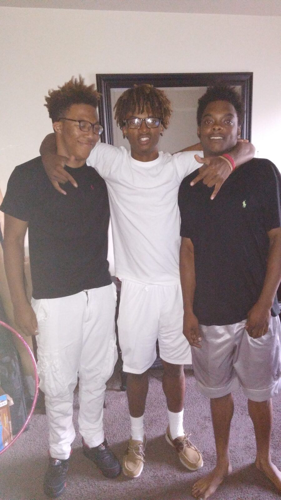
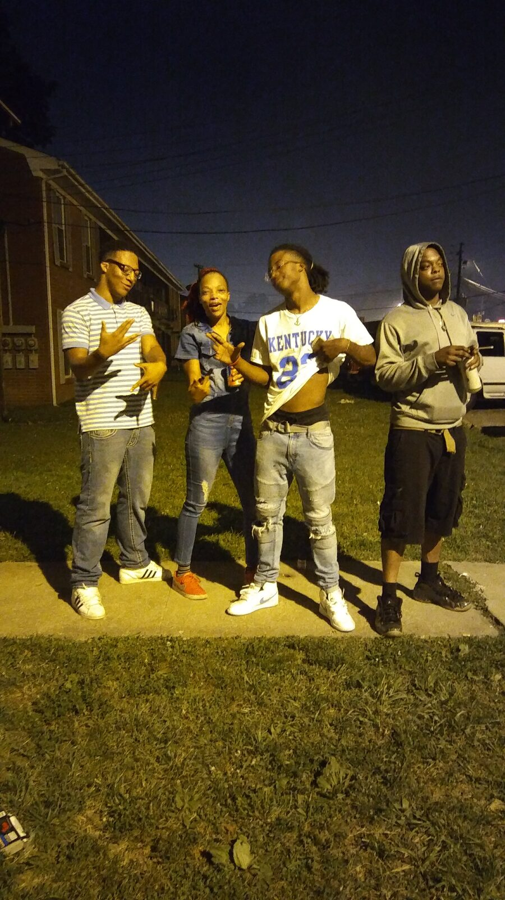
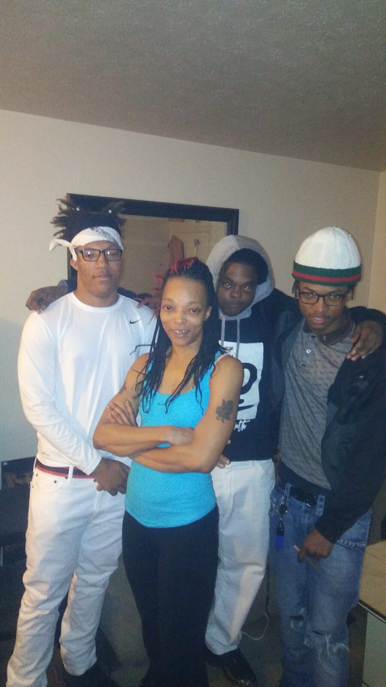

Warriors Spirit
The level of trauma & pain I've experienced throughout the years seemed to never let up. My life woes were a swirling abyss that surrounded me like a storm of needles starting from 2 car accidents before age 10, breast lumps, breast cancer, bouts of homelessness, ovarian tumors, mental illness, heart attack, divorce, and several domestic violence relationships (all of which could have ended my life). I can truly say that I had complied enough pain for 2 lifetimes by 40 yrs old.
The most devastating event occurring in December 2017 when I almost lost 2/3rd's of my whole world. Two of my three sons were victims of gun violence while coming out of a church community gymnasium. They were part of a violent gun assault spree across the city that injured at least 10 children under 20 yrs old. My youngest son was hit in the glute through to his hip bone, almost through-and-through so no major damage. The story was very different for my middle son. He was severely injured, had major damage to several organs and we thought we were gonna lose him but by the Grace of the Creator, he was spared. Blessings.



I Am A Fighter. I Am A Survivor. My clan are Fighters. My clan are Survivors.
Being MiMi
Mimi is a name I got bestowed upon me from my first goddaughter, Kerriona, in 2006. When she was a baby, I couldn't have her calling me and her mother "mama" so as she learned to speak, we corrected her by telling her I wasn't her mama, I was her godmother. She really couldn't tell the difference. Then when she would visit the boys would be holding her hostage for kisses and cuteness. She would get so irritated that she would come running saying “uh, uh, me, me, me” with her arms stretched up, indicating for me to pick her up and save her. I repeated it back to her and it stuck. So over time, it shortened to me-me (MiMi) which meant “the lady who isn't my mama, who loves me, protects me, and takes care of me.” Mimi, the mother lady who's not your mother. Me.
My troupe continued to blossom and bloom, with the birth of "Mimi". I had my biological boys, my stepson, my two stepdaughters, my goddaughter and then my godson. My little family wasn't so little anymore. I had a chance to be Mimi to my stepchildren from birth to 5 years old, thanks to my only marriage with their father and it was one of the best times in my life! Me and my sons solidified bonds with their step-siblings like true blood, something that can not be forgotten by any of us. They were the most amazing stepchildren I could ever ask for! They were loving, kind, caring little people who's favorite thing to do was having fun with their dad and step-family, creating memories. It was truly an life altering experience for me that I will always cherish.